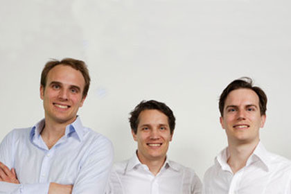
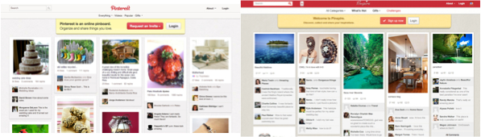
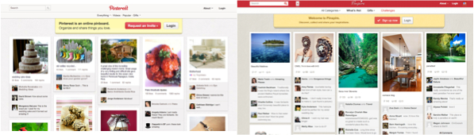

|

 

In 2005, the Samwer brothers developed a new model of startup creation. Whenever a promising concept starts gaining significant traction in the US, we clone it, build up a user base in Europe, Asia or South America, and sell it to the original company (or whoever wants to pay). Since 2005 we've cloned 38+ companies across 58+ countries, including Facebook, Ebay, Amazon, eHarmony, Groupon, Airbnb, Zappos, Etsy, Pinterest, Fab, and Square. We are now ready to take the next step in business cloning innovation. Twice a year we will invest significant amount of money in a large number of teams that will clone every YCombinator and Techstars startup as they get announced. The teams are on standby until a suitable opportunity arises, at which point they are to move to Berlin for 3 months to be hosted by Rocket Internet. We will work with the team intensively to build a clone, get traction in a number of countries outside the US, and then sell it.
|